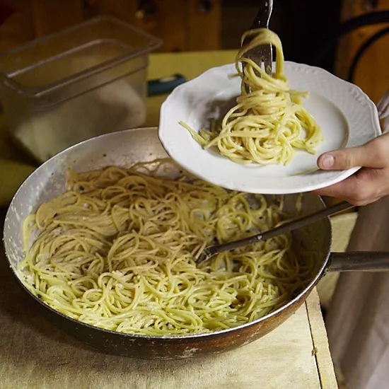

Pasta cacio e pepe ("cheese and pepper") is made with Pecorino Romano, a tangy aged sheep's-milk cheese originally from Rome, and lots of freshly ground black pepper. In Lazio, chef Antonio Ciminelli of Osteria Fontana Candida serves an elegant version with short pasta on the menu, and a rustic one with spaghetti for staff.

Ingredients
- ¾ pound spaghetti
- ¾ cup freshly grated Pecorino Romano cheese
- ⅓ cup freshly grated Parmigiano-Reggiano cheese
- 1 tablespoon coarsely ground black pepper
- Salt